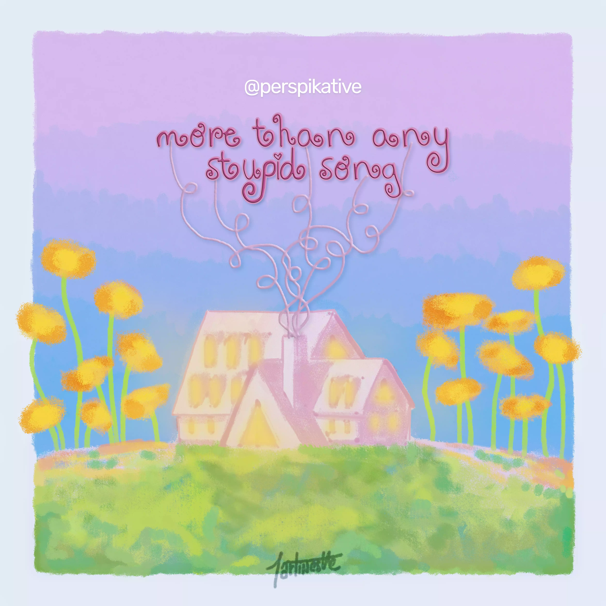
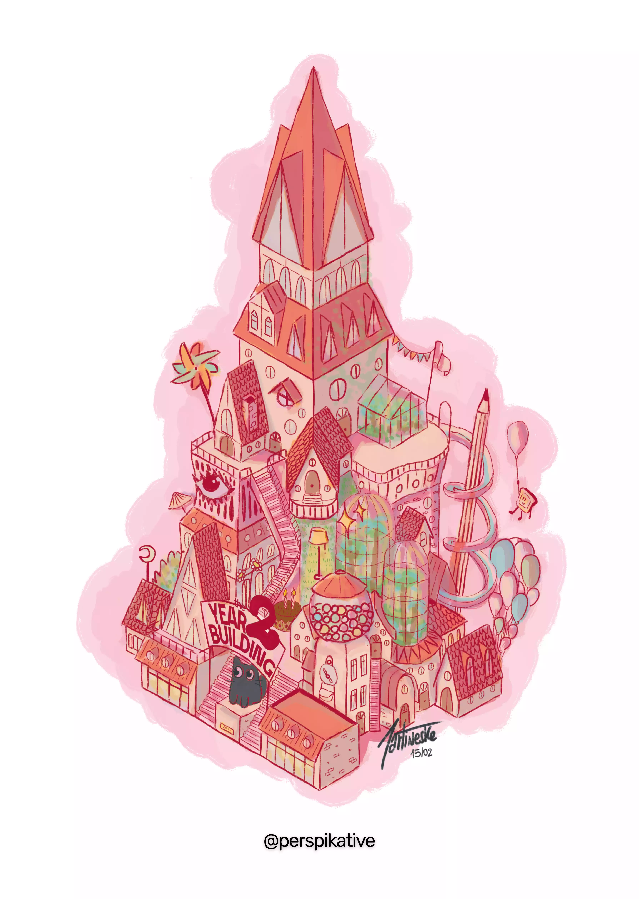

Teintes : Roses, bleus, verts, orange, jaune et mauve⌛️ Temps de travail : 2h
❇️ Médium : Dessin digital
💭 Imagination : 50% réfléchie • 40% improvisée • 10% d'Internet
💬 Commentaires :
Les paroles elles-mêmes racontent ce dessin, inspiré du titre « stupid song » de Olivia Rodrigo, son 3ème album studio « you seem pretty sad for a girl so in love » 🩰
« You're a spark in the dark and my clothes are caught aflame
You should feel how I feel when somebody says your name
I'm a car speeding down the boulevard, without a brake
And I want you more than any stupid song could ever say
I'm a heart made of wax, and I'm melting in the sun
I'm a thread on your shirt that is coming undone
I feel right, I feel wrong, i feel totally insane
And I want you more than any stupid song could ever say »" data-colors="rose,bleu,vert,orange,jaune,mauve" />

Teintes : Rose, beige, rouge, jaune, mauve, violet, vert, brun, orange et bleu⌛️ Temps de travail : 14h
❇️ Particularités : Perspective isométrique, première illustration graphique au digital
💭 Imagination : 90% improvisée • 10% réfléchie
💬 Commentaires :
Quelle chance : vous êtes tous conviés à l'anniversaire de Perspikative!! Rendez-vous au sommet du 2 Year Building pour faire la fête! Buffets à volonté sur nos terrasses, tobogan en libre-service, serres tropicales… rien ne vous ennuiera! Même la mascotte à l'entrée peut discuter avec vous 🍰" data-colors="rose,beige,rouge,jaune,mauve,violet,vert,brun,orange,bleu" />
Aucun résultat pour cette combinaison de couleurs